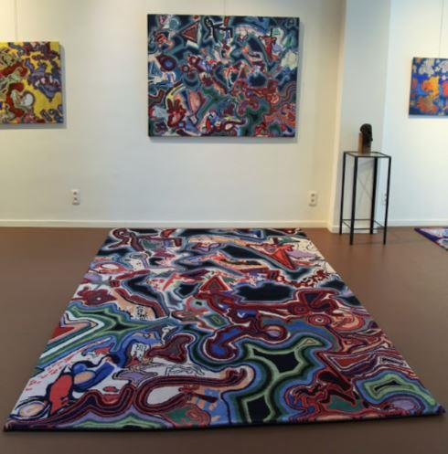

Nadiejda : 100 ans de nostalgies russes. 4e épisode : Rencontres avec deux peintres contemporaines d’origine russe
par Valérie FELDER
La première personne à avoir été interrogée dans le cadre de mon documentaire est ma tante, Catherine Barkowski, la sœur de ma mère. J’ai profité de l’heureuse présence de ma cousine Béatrice pour filmer une conversation entre une mère et sa fille, plutôt qu'un face-à-face de questions-réponses entre une tante et sa nièce.
Interview de ma tante Catherine Barkowski et ma cousine Béatrice
VIVRE EN RUSSIE AVANT 1917
Nous ferons trois entretiens distincts : le premier, celui qui nous retiendra aujourd'hui, tournera autour de la vie en Russie avant la révolution. Comment vivions-nous ? Quelle était l'éducation des enfants de l'époque, en Russie ?
Peinture de Catherine Barkovsky : L'éducation des enfants de l'époque
Les enfants de la noblesse et de la bourgeoise avaient une nounou et un précepteur à demeure mais ils avaient aussi des cours de dessin, de peinture, de musique, de chant. La littérature faisait partie de leur vie : « C'était le socle de l’éducation de l'époque pour ces enfants privilégiés qui parlaient tous cinq langues dès le plus jeune âge. »
LA CULTURE, UNE CONSTANTE, QUEL QUE SOIT LE RÉGIME POLITIQUE
Tableau de Catherine Barkovsky : une PaysanneAprès la révolution, l'art et la culture sont restés très importants dans le système éducatif en Union Soviétique, puis en Russie. Aujourd’hui, dans le programme scolaire russe, la littérature1 s’étudie en liaison étroite avec l’histoire, les beaux-arts et la musique. La culture a une place bien plus importante que dans notre système éducatif en Belgique ou en France.
Mais c'est aussi dans la famille que se vit l'investissement dans l'éducation culturelle des enfants, et pas uniquement dans les classes sociales privilégiées mais bien dans toutes les couches de la population : aussi bien chez les paysans, les ouvriers, que les professions libérales. Les savoir-faire de l’artisanat, les festivités au village, les repas de famille, les balades en forêt, les tâches partagées de la vie quotidienne contribuent à cette culture familiale.
UNE OUVERTURE CULTURELLE DANS LA FAMILLE, ÇA AIDE !
Je ne pense pas que, dans nos contrées, l’éducation soit déterminante pour le développement de nos aptitudes artistiques. Dans ces aptitudes, il y a évidemment une part liée aux prédispositions naturelles de chaque individu, mais une ouverture culturelle augmente nos chances de faire des rencontres intéressantes tout au long de notre vie, tout en modifiant et en affirmant ainsi des choix de vie, des goûts, des aptitudes.
La culture familiale a un rôle primordial dans l'éveil au monde de l'enfant. Bien plus que l'école, qui n'est, selon moi, pas un environnement naturel : trop de contraintes, de comparaisons, de normes pour y développer chez tous les enfants l’autonomie, la curiosité, l'empathie. Non, l'école d'aujourd'hui déforme trop souvent ; elle entraine les enfants à n’être que des travailleurs, des consommateurs, juste assez instruits pour avancer, avec plus ou moins d’efficacité, dans un monde complètement déconnecté de l’essentiel.
UN SOUVENIR PERSONNEL EN FORME D’OREILLES D’ÉLÉPHANT !
Ma première leçon d'Art eut lieu un mercredi après-midi. Je devais terminer un devoir d'illustration, mon grand-père me donne un petit coup de main. J'avais dessiné un éléphant que je trouvais mal fait, sans intérêt .On s'est mis à le redessiner ensemble. J'aimais les traits plus durs du coup de crayon de mon grand-père et je le regardais alors qu'il m'expliquait que les oreilles d'un éléphant n'étaient jamais aussi rondes, que chaque animal avait une oreille bien différente. Je regardais attentivement et nous avons fait le dessin ensemble : il a fait certaines parties et moi d'autres, en essayant de m'appliquer pour abandonner le style trop rond et enfantin de mon dessin. J'étais très fière de ce travail accompli ensemble.
TROIS NUANCES PROFONDES
La note que j'ai eue pour ce travail a été très mauvaise et l’appréciation encore plus : 0/10 Les devoirs des enfants ne doivent pas être fait par les adultes.
Cela m'a fait sourire en relisant cela parce que j'avais pourtant appris quelque chose d’essentiel que l'école ne m’apprendra jamais : la différence profonde qu'il peut y avoir entre regarder et observer. Tout comme je n’apprendrai pas non plus à l'école l’écart d'importance qu'il y a entre connaître et découvrir ou entre s'appliquer et s'impliquer.
REVENIR À L’ESSENTIEL
Je ne pense pas avoir été inspirée par une russitude particulière en dessinant avec mon grand-père. Le choix de me pencher sur mes racines est davantage lié à la réflexion que notre monde moderne nous dépossède des richesses transmises, nous impose une culture insipide, uniforme et terne.
Avec la maturité parfois, on se dit qu'il n'est jamais trop tard pour revenir à l’essentiel. Une douceur de vivre qui nous lie à la Terre, un devoir de mémoire qui nous rend plus réceptifs à ce que nous pouvons transmettre pour combattre la platitude d'une culture appauvrie par des priorités et des intérêts guidés uniquement par le profit, la compétitivité, le confort, la peur. Un vide que certains combleront peut-être dans une recherche identitaire exacerbée, fuyant un monde incapable de leur offrir une vie qui fasse sens.
UN UNIVERS LUMINEUX
Pour mon documentaire, je suis ensuite partie à la rencontre du peintre Boris Mestchersky : je voulais savoir si être d'origine russe avait inspiré les labyrinthes éclatants, les chemins d'intuition lumineux aux formes d'idéogrammes et aux tracés expansifs qui laissaient apparaître une certaine veine créative inspirée par le peintre V. Kandinsky.
 Œuvres de Boris Mestchersky http://mestcherskysartexhibition.blogspot.com/Je lui ai écrit pour savoir quand je pourrais l’interviewer à mon retour de Russie où je me trouvais à ce moment-là (voir l’épisode précédent). Il me répondit qu'il peignait actuellement en Serbie. Je décidai donc de faire un crochet par la Serbie avant de rentrer en Belgique.
Boris Mestchersky a fait ses études artistiques à Saint-Luc Liège et la gravure aux Beaux-Arts de Liège, mais celle qui l'a vraiment emmené sur le chemin de la peinture et qui lui en a fait découvrir les arcanes, c'est sa mère Vera Mestchersky, elle-même artiste peintre. Elle était la petite-fille de la princesse Vera Mestchersky, à qui l'on doit le cimetière russe de Sainte-Geneviève-des-bois.2
C’est donc en Serbie que nous nous retrouvons. J’y passerai quelques jours, séduite par la beauté des lieux.
Général Piotr Nikolaïevitch Wrangel
LE GÉNÉRAL WRANGEL3 EN SERBIE
La Serbie est ce pays où plus de 100 000 Russes blancs se sont réfugiés lors de la révolution. Au début des années 20, le général Wrangel s'installe à Belgrade où il fonde l'Union Générale des Combattants Russes et tente d’organiser un nouveau retour en Russie. Il abandonnera la lutte en 1925 pour s'établir à Bruxelles comme ingénieur. Il sera inhumé dans l'église orthodoxe russe de la Sainte-Trinité à Belgrade le 6 octobre 1929, à la demande de la forte communauté russe émigrée en Serbie et en Voïvodine.
LE SECRÉTAIRE DU GÉNÉRAL WRANGEL
Dans le cadre des entretiens préparatoires à mon documentaire, j'aurai aussi l'opportunité de m'entretenir avec Maya Apraxine qui me parlera de son père : il était à l’époque le secrétaire du général Wrangel.
Maya Apraxine Mon père était Nicolas Mikhailovitch Kotliarewsky, secrétaire du général P.N. Wrangel. « Wrangel était un homme merveilleux ».
RUSSIE D’AVANT LA RÉVOLUTION
Enfin, et en clôture de cet épisode, je cède volontiers la parole à ma tante, Catherine Barkovsky (nom d'artiste), pour vous initier un peu plus de la Russie d'avant la révolution. Elle m’a confié ce texte.
CATHERINE BARKOVSKY ET LA RUSSIE ÉTERNELLE
« Mon père était Russe, Russe blanc, sa famille ayant quitté la Russie avant qu’elle ne devienne l’Union Soviétique, au moment de la Révolution de I917. J’ai été très marquée par ma culture russe : la langue, la littérature, les expressions artistiques, qu’elles soient graphiques, musicales ou folkloriques.
La littérature russe a joué un rôle primordial dans ma vie c’est pourquoi ma peinture est si fortement influencée par elle et, en particulier, par la littérature humaniste et réaliste de la deuxième moitié du XIXe siècle, époque où vécurent mes grands-parents et dont j’ai tant entendu parler. Il s’agit d’une Russie mythique et disparue, nostalgique comme une pièce de Tchekhov…
Les peintres, tels Serov4, Repine5 Sourikov6, Maliavine7ou Arkhipov8, sont des sources d’inspiration inépuisables. Ils peignent la vie religieuse, paysanne ou aristocratique de la Russie du XIXe et du début du XXe. Il s’agit en quelque sorte de la peinture de la littérature. Elle illustre par le pinceau ce que dépeignent par la plume les écrivains tels Gogol, Tourgueniev, Tolstoï ou Tchekhov.
Cette Russie aurait pu disparaître totalement sous le joug soviétique, qui a réprimé drastiquement toute manifestation de foi religieuse, mais a aussi décimé la paysannerie, tellement attachée à sa terre en les envoyant au Goulag sous le régime de Staline. Et pourtant cette Russie éternelle n’a pas disparu… Malgré 80 ans de répressions, elle est toujours là, vivante, attendant son heure de renaissance. C’est donc cette âme éternelle que j’aime peindre. »
V.F.
Notes
1. La littérature dans l’enseignement scolaire en Russie Au service des valeurs nationales et humanistes, in Revue internationale d’éducation de Sèvres, n° 61, décembre 2012 : librement téléchargeable sur https://journals.openedition.org/ries/2678
2. Avec les premiers décès d'immigrés russes en exil, s'est posée la question du lieu de leur inhumation. La solution fut évidente, le cimetière communal de Sainte-Geneviève-des-Bois jouxtait la maison de retraite. On y enterrait non seulement les pensionnaires de la Maison russe, mais tous les immigrés qui avaient terminé leur vie en France ou ailleurs en Europe. Source : https://fr.rbth.com/articles/2010/03/24/24032010_immigration
3. (Novembre 1920) Wrangel commence une opération d'embarquement dans cinq ports de la mer Noire. En trois jours, il réussit à évacuer 146 000 personnes dont 70 000 soldats, casés sur 126 bateaux. . Tous ces gens sont dirigés vers la Turquie, la Grèce, la Yougoslavie, la Roumanie et la Bulgarie. (source Wikipédia) Pour la plupart ils resteront dans les Pays limitrophes de nombreuses années espérant un retour au pays. Puis ils se disperseront en France, en Belgique, au Canada, aux États unis…
4. Valentin Serov est un peintre de commande très apprécié de la bonne société. Nombre de ses portraits sont ceux d'artistes alors en vogue, de personnalités de la cour impériale, de grands bourgeois, de notables et de leurs épouses. (source : wikipedia)
5. Ilia Répine :L'instant représenté sur la toile est celui où un homme entre dans une pièce. C'est un exilé, probablement un activiste du mouvement La Volonté du Peuple (mouvement anarchiste terroriste de la fin du 19e siècle), revenant d'une région éloignée de Russie. (source : wikipedia)
6. Vassili Sourikov peint La Boyarine Morozova en 1887 où il illustre l'arrestation de Feodosia Morozova par les partisans du patriarche de Moscou, Nikon. En signe de défi, elle lève deux doigts se référant au différend entre les vieux-croyants et les partisans du patriarche Nikon. (source : wikipedia)
7. Philippe Maliavine fait partie des ambulants : Le premier groupement de peintres réalistes russes de la seconde moitié du 19e siècle et du début du 20e siècle.ainsi que du mouvement Mir iskousstva une association d'artistes russes fondée en 1898 dans l'idée de prôner un renouveau pictural de l'art russe en synthétisant plusieurs formes artistiques dont le théâtre, la décoration et l'art du livre. Les membres du groupe sont appelés miriskousniki. (source : wikipedia)
8. Abram Arkhipov peignait , la plupart du temps en plein air, les vastes espaces de la campagne russe au cours des saisons, forêts, fleuves et rivières, champs, routes, villages, scènes de la vie villageoise, pêcheurs, paysans et surtout beaucoup de paysannes, en particulier des régions de Riazan et de Nijni Novgorod, en costumes traditionnels. (source : wikipedia)
Partager cette page